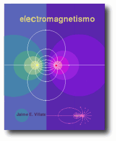

Livro de texto de electromagnetismo de nível introdutório destinado
aos estudantes de Engenharia e a todos aqueles que tenham
electromagnetismo no currículo dos seus cursos. Para a compreensão do
texto, os leitores não necessitam de ter conhecimentos prévios de
electromagnetismo mas precisam de ter alguns conhecimentos de cálculo
e de álgebra vectorial. Cada capítulo contém para além da matéria
teórica, uma série de exemplos resolvidos e uma lista de problemas
propostos cujas respostas são apresentadas no fim do livro. Várias
biografias e retratos de cientistas são apresentadas ao longo do
livro.
Conteúdo
- Campo eléctrico. Força e carga eléctricas. Lei de
Coulomb. Campo eléctrico. Linhas de campo eléctrico. Distribuições
contínuas de carga.
- Sistemas com simetria e condutores. Fluxo
eléctrico. Lei de Gauss. Condutores em equilíbrio
electrostático.
- Potencial eléctrico. Trabalho e energia. Diferença
de potencial electrostático. Gradiente do potencial. Superfícies
equipotenciais. Cálculo do potencial eléctrico. Potencial e carga
nos condutores.
- Equações fundamentais da
electrostática. Limitações da lei de
Coulomb. Divergência. Teorema da divergência. Rotacional. Teorema de
Stokes. Equação de Poisson.
- Capacidade e energia electrostática. Capacidade
eléctrica. Condensadores. Energia electrostática. Energia armazenada
num condensador. Dieléctricos. Campo eléctrico dentro da
matéria.
- Corrente eléctrica. Densidade de
corrente. Resistência e lei de Ohm. Resistência e
temperatura. Supercondutividade. Energia dissipada num
condutor. Fontes de força electromotriz.
- Circuitos eléctricos I. Circuitos
equivalentes. Associação de resistências e condensadores. Energia
nos circuitos. Regras de Kirchhoff. Circuito RC. Circuito RC com
fonte. Amperímetros, voltímetros e ohmímetros.
- Campo magnético. Campo de indução magnética. Força
magnética sobre um condutor com corrente. Espiras e
bobinas. Movimento de partículas dentro do campo
magnético. Aplicações dos campos eléctrico e magnético.
- Magnetostática. Lei de Biot-Savart. Força
magnética entre fios com corrente. Lei de Ampère. Linhas de indução
magnética. Solenóides. Equações fundamentais da
magnetostática. Campo magnético dentro da matéria.
- Indução Electromagnética. Lei de Faraday. Gerador
de corrente alternada. Indução em condutores em movimento. Gerador
de Faraday. Campo eléctrico em referenciais em movimento. Forma
geral da lei de Faraday. Auto-indução.
- Circuitos eléctricos II. Série de
Fourier. Fasores. Impedância. Associações de resistências,
condensadores e indutores. Potência média. Ressonância. Transformada
de Laplace. Resposta transitória do circuito LCR.
- Electrodinâmica. Corrente de
deslocamento. Equações de Maxwell. Transformação de Galileu do campo
electromagnético. Energia do campo electromagnético. Potencial
vectorial.
- Ondas electromagnéticas e luz. Ondas
electromagnéticas. Equação de onda electromagnética. Ondas
planas. Ondas harmónicas. Ondas esféricas. Intensidade das ondas
electromagnéticas. Espectro electromagnético. Ondas
electromagnéticas em meios materiais.
- Respostas aos problemas.
- Apêndices.
- Bibliografia.
- Índice remissivo.
Comentário na Gazeta de Física
"...O livro que [Jaime Villate] escreveu é, de facto, o resultado
de uma hibridez bem sucedida entre o sistema anglo-saxónico, sempre
com uma mão e um olho rápidos na tecnologia, e as potencialidades do
formalismo matemático. O rigor existe em ambos os aspectos". Gazeta de
Física (revista da Sociedade Portuguesa de Física), Vol. 22
(1999).